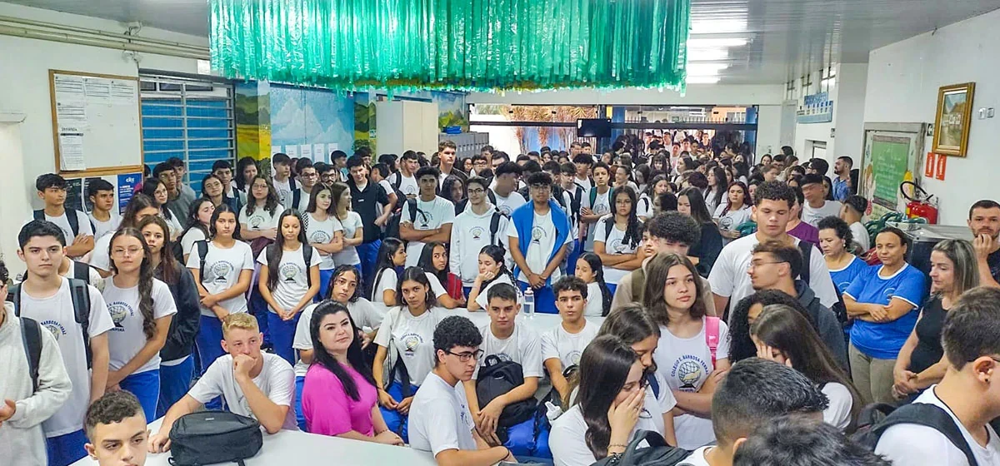

Ensino Médio de Qualidade no Barbosa Ferraz
O Ensino Médio no Colégio Estadual Barbosa Ferraz é pautado em uma formação sólida, com foco na preparação para vestibulares, ENEM, e para a vida em sociedade.
Nossos alunos contam com professores experientes, projetos interdisciplinares e atividades que desenvolvem o pensamento crítico e a responsabilidade cidadã.
- ✔️ Base Nacional Comum Curricular (BNCC)
- ✔️ Projeto de Vida e Itinerários Formativos
- ✔️ Apoio para ENEM e vestibulares
- ✔️ Simulados, feiras, debates e olimpíadas